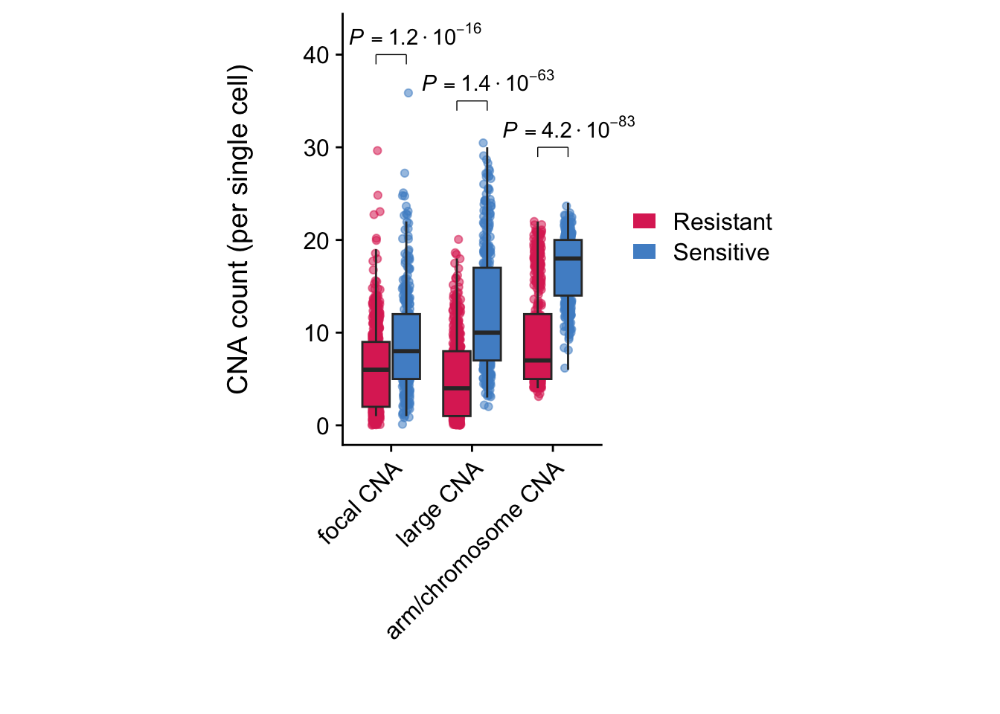
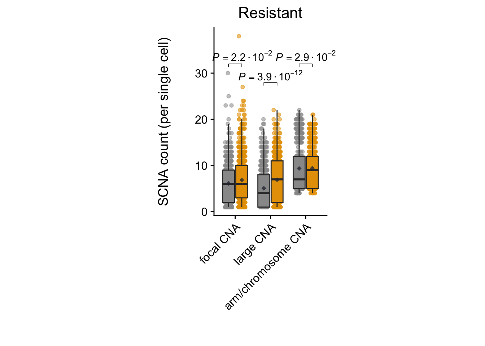
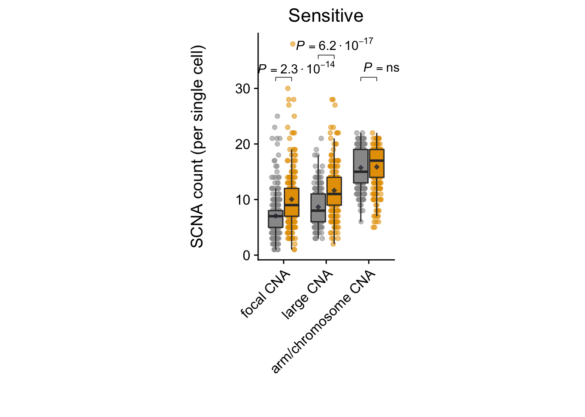

5 Copy number pattern analyses
# Libraries and sources
library(stringr)
library(tidyverse)
library(cowplot)
library(ggpubr)
library(ggbeeswarm)
library(nord)
library(readxl)
library(AneuFinder)
source('R/cin_signature_ccle.R')
source('R/cna_profiler.R')
source('../cna_analysis/R/calculate_heterogeneity_score.R')
source('../cna_analysis/R/shifters.R')5.1 Single cell analyses
5.1.1 Heterogeneity score
#######
# Run #
#######
# create_cn_matrix cannot run when a subclone exist of just 1 clone
i <- which(sapply(subclone_list, length) > 1)
subclone_list <- subclone_list[i]
subclone_cn_matrix <- sapply(subclone_list, create_cn_matrix)########
# Data #
########
load('../cna_analysis/rda/cin_analysis/subclone_cn_matrices.rda')
#######
# Run #
#######
clust_and_shift_subclones <-
sapply(subclone_cn_matrix, cluster_and_shift_transitions, max_dist = 5000000)########
# Data #
########
load('../cna_analysis/rda/cin_analysis/clust_and_shift_subclones.rda')
load('../cna_analysis/rda/subclonal_dynamics/subclone_list.rda')
###########
# Wrangle #
###########
# !!! GITHUB SPECIFIC CODE !!! #
# adding '../cna_analysis/' to each path within man_select_files_edivisive
subclone_list <- lapply(subclone_list, function(x) paste0("../cna_analysis/", x))
# removing clones with size 1 or less
i <- which(sapply(subclone_list, length) > 1)
# adding subclone size to the dataframe
subclone_list <- subclone_list[i]
#######
# Run #
#######
hetscore <- lapply(clust_and_shift_subclones[1,], FUN = calculate_heterogeneity_score, min_num = 1)## Start | calculate_heterogeneity_score
## End | calculate_heterogeneity_score
## Start | calculate_heterogeneity_score
## End | calculate_heterogeneity_score
## Start | calculate_heterogeneity_score
## End | calculate_heterogeneity_score
## Start | calculate_heterogeneity_score
## End | calculate_heterogeneity_score
## Start | calculate_heterogeneity_score
## End | calculate_heterogeneity_score
## Start | calculate_heterogeneity_score
## End | calculate_heterogeneity_score
## Start | calculate_heterogeneity_score
## End | calculate_heterogeneity_score
## Start | calculate_heterogeneity_score
## End | calculate_heterogeneity_score
## Start | calculate_heterogeneity_score
## End | calculate_heterogeneity_score
## Start | calculate_heterogeneity_score
## End | calculate_heterogeneity_score
## Start | calculate_heterogeneity_score
## End | calculate_heterogeneity_score
## Start | calculate_heterogeneity_score
## End | calculate_heterogeneity_score
## Start | calculate_heterogeneity_score
## End | calculate_heterogeneity_score
## Start | calculate_heterogeneity_score
## End | calculate_heterogeneity_score
## Start | calculate_heterogeneity_score
## End | calculate_heterogeneity_score
## Start | calculate_heterogeneity_score
## End | calculate_heterogeneity_score
## Start | calculate_heterogeneity_score
## End | calculate_heterogeneity_score
## Start | calculate_heterogeneity_score
## End | calculate_heterogeneity_score
## Start | calculate_heterogeneity_score
## End | calculate_heterogeneity_score
## Start | calculate_heterogeneity_score
## End | calculate_heterogeneity_score
## Start | calculate_heterogeneity_score
## End | calculate_heterogeneity_score
## Start | calculate_heterogeneity_score
## End | calculate_heterogeneity_score
## Start | calculate_heterogeneity_score
## End | calculate_heterogeneity_score
## Start | calculate_heterogeneity_score
## End | calculate_heterogeneity_score
## Start | calculate_heterogeneity_score
## End | calculate_heterogeneity_score
## Start | calculate_heterogeneity_score
## End | calculate_heterogeneity_score
## Start | calculate_heterogeneity_score
## End | calculate_heterogeneity_score
## Start | calculate_heterogeneity_score
## End | calculate_heterogeneity_score
## Start | calculate_heterogeneity_score
## End | calculate_heterogeneity_score
## Start | calculate_heterogeneity_score
## End | calculate_heterogeneity_score
## Start | calculate_heterogeneity_score
## End | calculate_heterogeneity_score
## Start | calculate_heterogeneity_score
## End | calculate_heterogeneity_score
## Start | calculate_heterogeneity_score
## End | calculate_heterogeneity_score
## Start | calculate_heterogeneity_score
## End | calculate_heterogeneity_score
## Start | calculate_heterogeneity_score
## End | calculate_heterogeneity_score
## Start | calculate_heterogeneity_score
## End | calculate_heterogeneity_score
## Start | calculate_heterogeneity_score
## End | calculate_heterogeneity_score###########
# Wrangle #
###########
list_of_dataframes <- lapply(hetscore, function(list_of_hetscores) {
return(list_of_hetscores$genomewide)
})
# bind them into one df
aneu_het_score <- bind_rows(list_of_dataframes)
# add subclone full name
aneu_het_score$full_id <- colnames(clust_and_shift_subclones)
# include only those organoids that we are interested in for this analysis
aneu_het_score <- aneu_het_score[!grepl(pattern = 'biological|c2', aneu_het_score$full_id ),]
# add organoids id
aneu_het_score$cline <- str_extract(pattern = 'hub\\d{3}', aneu_het_score$full_id )
# add radiation status
aneu_het_score$rad <- str_extract(pattern = 'prerad|postrad', aneu_het_score$full_id)
# add subclone_id
aneu_het_score$subclone <- str_extract(aneu_het_score$full_id, "_(.*)")
aneu_het_score$subclone <- str_replace(aneu_het_score$full_id, pattern = '_prerad_|_postrad_', replacement = '')
# #######
# # Run #
# #######
# # adding aneuploidy scores
# kars <- sapply(subclone_list[aneu_het_score$full_id], karyotypeMeasures)
#
# ###########
# # Wrangle #
# ###########
# ## Print the scores in one data.frame
# kars_list <- list()
# for (i in 1:dim(kars)[2]) {
# kars_list[[colnames(kars)[i]]] <- kars[1,i]
# }
#
# kars_df <- data.frame(value = unlist(kars_list))
#
# # every uneven row is aneuploidy
# i_uneven <- seq_len(nrow(kars_df)) %% 2 # Create row indicator
# kars_df <- kars_df[i_uneven == 1, ]
#
# # binding heterogeneity score dataframe and kars_df together
# aneu_het_score$aneuploidy <- kars_df
# # rename full_id -> unique_id
aneu_het_score <- aneu_het_score %>%
rename("full_id" = "unique_id" )################
### BASELINE ###
################
###########
# Wrangle #
###########
res_df <-
subset(aneu_het_score, unique_id %in% aneu_het_score$unique_id[c(
grep('hub005', aneu_het_score$unique_id),
grep('hub183', aneu_het_score$unique_id),
grep('hub015', aneu_het_score$unique_id),
grep('hub062_prerad_a', aneu_het_score$unique_id),
grep('hub197_prerad_a', aneu_het_score$unique_id)
)]) %>% mutate(resistancy_group = 'Resistant')
sens_df <-
subset(aneu_het_score, unique_id %in% aneu_het_score$unique_id[c(
grep('hub106', aneu_het_score$unique_id),
grep('hub197', aneu_het_score$unique_id),
grep('hub062_prerad_b', aneu_het_score$unique_id),
grep('hub062_postrad_b', aneu_het_score$unique_id),
grep('hub062_prerad_c', aneu_het_score$unique_id),
grep('hub062_postrad_c', aneu_het_score$unique_id)
)]) %>% mutate(resistancy_group = 'Sensitive') %>%
filter(unique_id != 'hub197_prerad_a')
df <- rbind(res_df, sens_df)
# remove postrad except
df <-
df %>% filter(rad != 'postrad') %>% rbind(df %>% filter(unique_id == 'hub062_postrad_a'))
#################
# Heterogeneity #
#################
# Statistics #
##############
mwu_het <- compare_means(
Heterogeneity_2 ~ resistancy_group,
data = df,
method = "t.test",
paired = F
)
# make y positon empty vector, and convert p to scientific notation with 1 decimal
het_y <- 0.7
mwu_het <- mwu_het %>%
mutate(y.position = c(het_y), empty = ' ') %>%
mutate(p = format(p, digits = 2)) %>%
mutate(p = as.numeric(p)) %>%
mutate(p = format(p, scientific = T)) %>%
mutate(p = sub("e", "%.% 10^", p))
# Plot #
########
ggplot(data = df,
aes(x = as.factor(resistancy_group),
y = Heterogeneity_2)) +
theme_cowplot() +
geom_boxplot(aes(fill = resistancy_group),
outlier.shape = NA) +
scale_fill_manual(values = c(Resistant = '#DE3163', Sensitive = '#5090CD')) +
xlab('') +
ylab('Heterogeneity') +
stat_pvalue_manual(mwu_het, label = 'empty') +
annotate(
'text',
x = 1.5,
y = het_y * 1.0571,
label = paste0("italic(P)==", mwu_het$p),
parse = T
) +
theme(
axis.text.x = element_text(angle = 45, hjust=1),
legend.position = "none",
aspect.ratio = 5 / 1.5)
5.1.2 Copy number length analysis
########
# Data #
########
load('../cna_analysis/rda/cin_analysis/subclone_cn_matrices.rda')
#######
# Run #
#######
cna_profile_per_subclone_output <- lapply(subclone_cn_matrix, cna_profiler)
###########
# Wrangle #
###########
# binding togehter
cna_df <- bind_rows(cna_profile_per_subclone_output, .id = "unique_id")
# add radiation status
cna_df$rad <- str_extract(pattern = 'prerad|postrad', cna_df$unique_id)########
# Data #
########
load('../cna_analysis/rda/cin_analysis/cna_profiles.rda')
################
### BASELINE ###
################
###########
# Wrangle #
###########
# include only those organoids that we are interested in for this analysis
cna_df <- cna_df[!grepl(pattern = 'biological|c2', cna_df$unique_id ),]
res_df <-
subset(cna_df, unique_id %in% cna_df$unique_id[c(
grep('hub005', cna_df$unique_id),
grep('hub183', cna_df$unique_id),
grep('hub015', cna_df$unique_id),
grep('hub062_prerad_a', cna_df$unique_id),
grep('hub197_prerad_a', cna_df$unique_id)
)]) %>% mutate(resistancy_group = 'Resistant')
sens_df <-
subset(cna_df, unique_id %in% cna_df$unique_id[c(
grep('hub106', cna_df$unique_id),
grep('hub197', cna_df$unique_id),
grep('hub062_prerad_b', cna_df$unique_id),
grep('hub062_postrad_b', cna_df$unique_id),
grep('hub062_prerad_c', cna_df$unique_id),
grep('hub062_postrad_c', cna_df$unique_id)
)]) %>% mutate(resistancy_group = 'Sensitive') %>%
filter(unique_id != 'hub197_prerad_a')
df <- rbind(res_df, sens_df)
# remove postrad
df <- df %>% filter(rad != 'postrad') %>% rbind(df %>% filter(unique_id == 'hub062_postrad_a' ))
# making bins
df_scna <- df %>% mutate(scna = ifelse(fraction < 0.3, 'fCNA', ifelse(fraction > '0.98', 'arm', 'lCNA'))) %>%
group_by(cell_id, rad, resistancy_group) %>% count(scna)
########
# Plot #
########
# Boxplot #
###########
#### DISCUSS WITH ONNO WHAT WE WANT TO DO HERE ####
### STATISTICS PER CELL ###
stat <- compare_means(
n ~ resistancy_group,
group.by = c('scna'),
data = df_scna,
method = "wilcox.test",
paired = F
)
y.post = c(40, 35, 30)
stat <- stat %>%
mutate(y.position = y.post, empty = ' ') %>%
mutate(p = format(p, digits = 2)) %>%
mutate(p = as.numeric(p)) %>%
mutate(p = format(p, scientific = T)) %>%
mutate(p = sub("e", "%.% 10^", p))
stat <- within(stat, p[p.signif == 'ns'] <- 'ns')
# Plot
ggplot(df_scna, aes(x= as.factor(scna), y = n, group = interaction(scna, resistancy_group))) +
geom_point(aes(alpha= 1, col = resistancy_group),
position=position_jitterdodge(1, jitter.width = 0.1)) +
guides(alpha = 'none') +
scale_colour_manual(values=c(Resistant = '#DE3163', Sensitive ='#5090CD')) +
geom_boxplot(outlier.shape = NA,
aes(fill = resistancy_group)) +
theme_cowplot() +
scale_fill_manual(values=c(Resistant = '#DE3163', Sensitive ='#5090CD'),
guide = guide_legend(override.aes = list(
linetype = c(rep("blank", length(unique(df_scna$resistancy_group)))),
shape = c(rep(19, length(unique(df_scna$resistancy_group))))))) +
# stat_summary(alpha = 0.8, fun.y=mean, position = position_dodge(0.75), geom="point", shape=18, size=2, color="#2E3440", fill="#2E3440") +
labs(x=expression(atop(" ")),
y=expression(atop("CNA count (per single cell)"))) +
theme(legend.title=element_blank(), aspect.ratio = 5/3, axis.text.x = element_text(angle = 45, hjust = 1)) +
scale_x_discrete(limits = c('fCNA', 'lCNA', 'arm'),
labels=c("fCNA" = "focal CNA", "lCNA" = "large CNA",
"arm" = "arm/chromosome CNA")) +
# adding P value to fSCNA
annotate(linewidth = 0.25,"segment", x = 0.8125, xend = 1.1875, y = y.post[1], yend = y.post[1]) +
annotate(linewidth = 0.25,"segment", x = 0.8125, xend = 0.8125, y = y.post[1], yend = y.post[1]-1.05) +
annotate(linewidth = 0.25,"segment", x = 1.1875, xend = 1.1875, y = y.post[1], yend = y.post[1]-1.05) +
annotate(
'text',
x = 1.3,
y = y.post[1] +2.284,
label = paste0("italic(P)==", stat$p[2]),
parse = T
) +
# adding P value to lSCNA
annotate(linewidth = 0.25,"segment", x = 1.8125, xend = 2.1875, y = y.post[2], yend = y.post[2]) +
annotate(linewidth = 0.25,"segment", x = 1.8125, xend = 1.8125, y = y.post[2], yend = (y.post[2]-1.05)) +
annotate(linewidth = 0.25,"segment", x = 2.1875, xend = 2.1875, y = y.post[2], yend = (y.post[2]-1.05)) +
annotate(
'text',
x = 2.2,
y = y.post[2] + 2.284,
label = paste0("italic(P)==", stat$p[3]),
parse = T
) +
# adding P value to arm
annotate(linewidth = 0.25,"segment", x = 2.8125, xend = 3.1875, y = y.post[3], yend = y.post[3]) +
annotate(linewidth = 0.25,"segment", x = 2.8125, xend = 2.8125, y = y.post[3], yend = (y.post[3]-1.05)) +
annotate(linewidth = 0.25,"segment", x = 3.1875, xend = 3.1875, y = y.post[3], yend = (y.post[3]-1.05)) +
annotate(
'text',
x = 3.2,
y = y.post[3] + 2.284,
label = paste0("italic(P)==", stat$p[1]),
parse = T
) +
coord_cartesian(clip = 'off') # making sure the p values don't can't clipped when going out of the plot margin
####################
### RAD RESPONSE ###
####################
res_df <-
subset(cna_df, unique_id %in% cna_df$unique_id[c(
grep('hub005', cna_df$unique_id),
grep('hub183', cna_df$unique_id),
grep('hub015', cna_df$unique_id),
grep('hub062_prerad_a', cna_df$unique_id),
grep('hub062_postrad_a', cna_df$unique_id),
grep('hub197_prerad_a', cna_df$unique_id),
grep('hub197_postrad_a', cna_df$unique_id)
)]) %>% mutate(resistancy_group = 'Resistant')
sens_df <-
subset(cna_df, unique_id %in% cna_df$unique_id[c(
grep('hub106', cna_df$unique_id),
grep('hub062_prerad_b', cna_df$unique_id),
grep('hub062_postrad_b', cna_df$unique_id),
grep('hub062_prerad_c', cna_df$unique_id),
grep('hub062_postrad_c', cna_df$unique_id)
)]) %>% mutate(resistancy_group = 'Sensitive')
df <- rbind(res_df, sens_df)
# making bins
df_scna <- df %>% mutate(scna = ifelse(fraction < 0.3, 'fCNA', ifelse(fraction > '0.98', 'arm', 'lCNA'))) %>%
group_by(cell_id, rad, resistancy_group) %>% count(scna)
df_scna %>% ungroup() %>% group_by(scna, rad, resistancy_group) %>% summarize(mean = mean(n), median = median(n))## # A tibble: 12 × 5
## # Groups: scna, rad [6]
## scna rad resistancy_group mean median
## <chr> <chr> <chr> <dbl> <dbl>
## 1 arm postrad Resistant 9.42 9
## 2 arm postrad Sensitive 15.9 17
## 3 arm prerad Resistant 9.36 7
## 4 arm prerad Sensitive 15.7 15
## 5 fCNA postrad Resistant 6.86 6
## 6 fCNA postrad Sensitive 10.0 9
## 7 fCNA prerad Resistant 6.14 6
## 8 fCNA prerad Sensitive 7.05 7
## 9 lCNA postrad Resistant 6.93 7
## 10 lCNA postrad Sensitive 11.6 11
## 11 lCNA prerad Resistant 5.06 4
## 12 lCNA prerad Sensitive 8.65 8# changing levels
df_scna$scna <- factor(df_scna$scna,levels = c("fCNA", "lCNA", "arm"))
df_scna$rad <- factor(df_scna$rad ,
levels = c('prerad','postrad'))
# Statistics #
##############
stat <- compare_means(
data = df_scna,
n ~ rad,
group.by = c('scna', 'resistancy_group'),
method = "wilcox.test",
paired = F
)
y.post = c(32, 32, 28, 32, 32, 36)
stat <- stat %>%
mutate(y.position = y.post, empty = ' ') %>%
mutate(p = format(p, digits = 2)) %>%
mutate(p = as.numeric(p)) %>%
mutate(p = format(p, scientific = T)) %>%
mutate(p = sub("e", "%.% 10^", p))
stat <- within(stat, p[p.signif == 'ns'] <- 'ns')
### Resistant ###
ggplot(subset(df_scna, resistancy_group == 'Resistant'), aes(x= as.factor(scna), y = n, group = interaction(scna, rad))) +
geom_jitter(aes(alpha= 0.8, col = rad),
position=position_jitterdodge()) +
guides(alpha = 'none', col = 'none') +
scale_colour_manual(values=c(prerad = "#999999", postrad ="#E69F00")) +
geom_boxplot(outlier.shape = NA,
aes(fill = rad)) +
stat_summary(alpha = 0.8, fun.y=mean, position = position_dodge(0.75), geom="point", shape=18, size=2, color="#2E3440", fill="#2E3440") +
theme_cowplot() +
scale_fill_manual(values=c(prerad = "#999999", postrad ="#E69F00"),
labels = c(prerad = 'Baseline', postrad = 'Recurrence'),
guide = guide_legend(override.aes = list(
linetype = c(rep("blank", length(unique(df_scna$resistancy_group)))),
shape = c(rep(19, length(unique(df_scna$resistancy_group))))))) +
labs(x=expression(atop(" ")),
y=expression(atop("SCNA count (per single cell)"))) +
theme(strip.background = element_rect(
color="white", fill="white", linetype="solid"
), legend.title=element_blank(), aspect.ratio = 5/3) +
labs(title = 'Resistant') +
theme(plot.title = element_text(hjust = 0.5, face = 'plain'),
legend.position = "none", axis.text.x = element_text(angle = 45, hjust = 1)) +
scale_x_discrete(limits = c('fCNA', 'lCNA', 'arm'),
labels=c("fCNA" = "focal CNA", "lCNA" = "large CNA",
"arm" = "arm/chromosome CNA")) +
# adding P value to fSCNA
annotate(linewidth = 0.25,"segment", x = 0.8125, xend = 1.1875, y = y.post[2], yend = y.post[2]) +
annotate(linewidth = 0.25,"segment", x = 0.8125, xend = 0.8125, y = y.post[2], yend = (y.post[2]-0.7)) +
annotate(linewidth = 0.25,"segment", x = 1.1875, xend = 1.1875, y = y.post[2], yend = (y.post[2]-0.7)) +
annotate(
'text',
x = 1.2,
y = y.post[2] * 1.0571,
label = paste0("italic(P)==", stat$p[2]),
parse = T
) +
# adding P value to lSCNA
annotate(linewidth = 0.25,"segment", x = 1.8125, xend = 2.1875, y = y.post[3], yend = y.post[3]) +
annotate(linewidth = 0.25,"segment", x = 1.8125, xend = 1.8125, y = y.post[3], yend = (y.post[3]-0.7)) +
annotate(linewidth = 0.25,"segment", x = 2.1875, xend = 2.1875, y = y.post[3], yend = (y.post[3]-0.7)) +
annotate(
'text',
x = 2,
y = y.post[3] * 1.0571,
label = paste0("italic(P)==", stat$p[3]),
parse = T
) +
# adding P value to arm
annotate(linewidth = 0.25,"segment", x = 2.8125, xend = 3.1875, y = y.post[1], yend = y.post[1]) +
annotate(linewidth = 0.25,"segment", x = 2.8125, xend = 2.8125, y = y.post[1], yend = (y.post[1]-0.7)) +
annotate(linewidth = 0.25,"segment", x = 3.1875, xend = 3.1875, y = y.post[1], yend = (y.post[1]-0.7)) +
annotate(
'text',
x = 3,
y = y.post[1] * 1.0571,
label = paste0("italic(P)==", stat$p[1]),
parse = T
) +
coord_cartesian(clip = 'off') 
### Sensitive ###
ggplot(subset(df_scna, resistancy_group == 'Sensitive'), aes(x= as.factor(scna), y = n, group = interaction(scna, rad))) +
geom_jitter(aes(alpha= 0.8, col = rad),
position=position_jitterdodge()) +
guides(alpha = 'none', col = 'none') +
scale_colour_manual(values=c(prerad = "#999999", postrad ="#E69F00")) +
geom_boxplot(outlier.shape = NA,
aes(fill = rad)) +
stat_summary(alpha = 0.8, fun.y=mean, position = position_dodge(0.75), geom="point", shape=18, size=2, color="#2E3440", fill="#2E3440") +
theme_cowplot() +
scale_fill_manual(values=c(prerad = "#999999", postrad ="#E69F00"),
labels = c(prerad = 'Baseline', postrad = 'Recurrence'),
guide = guide_legend(override.aes = list(
linetype = c(rep("blank", length(unique(df_scna$resistancy_group)))),
shape = c(rep(19, length(unique(df_scna$resistancy_group))))))) +
labs(x=expression(atop(" ")),
y=expression(atop("SCNA count (per single cell)"))) +
theme(legend.position = "none", strip.background = element_rect(
color="white", fill="white", linetype="solid"
), legend.title=element_blank(), aspect.ratio = 5/3) +
labs(title = 'Sensitive') +
theme(plot.title = element_text(hjust = 0.5, face = 'plain'),axis.text.x = element_text(angle = 45, hjust = 1)) +
scale_x_discrete(limits = c('fCNA', 'lCNA', 'arm'),
labels=c("fCNA" = "focal CNA", "lCNA" = "large CNA",
"arm" = "arm/chromosome CNA")) +
# adding P value to fSCNA
annotate(linewidth = 0.25,"segment", x = 0.8125, xend = 1.1875, y = y.post[5], yend = y.post[5]) +
annotate(linewidth = 0.25,"segment", x = 0.8125, xend = 0.8125, y = y.post[5], yend = (y.post[5]-0.7)) +
annotate(linewidth = 0.25,"segment", x = 1.1875, xend = 1.1875, y = y.post[5], yend = (y.post[5]-0.7)) +
annotate(
'text',
x = 1.3,
y = y.post[5] * 1.0571,
label = paste0("italic(P)==", stat$p[5]),
parse = T
) +
# adding P value to lSCNA
annotate(linewidth = 0.25,"segment", x = 1.8125, xend = 2.1875, y = y.post[6], yend = y.post[6]) +
annotate(linewidth = 0.25,"segment", x = 1.8125, xend = 1.8125, y = y.post[6], yend = (y.post[6]-0.7)) +
annotate(linewidth = 0.25,"segment", x = 2.1875, xend = 2.1875, y = y.post[6], yend = (y.post[6]-0.7)) +
annotate(
'text',
x = 2.2,
y = y.post[6] * 1.0571,
label = paste0("italic(P)==", stat$p[6]),
parse = T
) +
# adding P value to arm
annotate(linewidth = 0.25,"segment", x = 2.8125, xend = 3.1875, y = y.post[4], yend = y.post[4]) +
annotate(linewidth = 0.25,"segment", x = 2.8125, xend = 2.8125, y = y.post[4], yend = (y.post[4]-0.7)) +
annotate(linewidth = 0.25,"segment", x = 3.1875, xend = 3.1875, y = y.post[4], yend = (y.post[4]-0.7)) +
annotate(
'text',
x = 3.3,
y = y.post[4] * 1.0571,
label = paste0("italic(P)==", stat$p[4]),
parse = T
) +
coord_cartesian(clip = 'off') 
5.2 CCLE analysis
5.2.1 Run CIN signature
########
# Data #
########
# radiation data
load('../cna_analysis/rda/cna_analysis/ccle_rad_data.rda')
# metadata
load('../cna_analysis/data/cna_analysis/22Q4_sample_info')
# cnv data
cnv_ccle <- read.csv('../cna_analysis/data/cna_analysis/22Q4_CCLE_segment_cn.csv')
###########
# Wrangle #
###########
colnames(meta_df)[1] <- 'DepMap_ID'
#######
# Run #
#######
# run_cin_ccle for cells from which we have radiation sensitivity data
cin_df <- run_cin_ccle(cnv_ccle, rad_df)5.2.2 Statistics CIN signature
## [1] 529# CX1 and CX7 are statistically different (including adjustment for primary disease and subtype).
stat <- bind_rows(lapply(unique(cin_df$cx_signature), function(cx_sig) {
d <- cin_df %>% filter(resistancy_group %in% c('Resistant', 'Sensitive')) %>% filter(cx_signature == cx_sig)
# running lm so to control for primary_disease and subtype
mean_cxscore_resistant <- mean(subset(d, resistancy_group == 'Resistant')$cx_value)
mean_cxscore_sensitive <- mean(subset(d, resistancy_group == 'Sensitive')$cx_value)
fc <- mean_cxscore_resistant/mean_cxscore_sensitive
lm_o <- summary(lm(cx_value ~ resistancy_group + primary_disease + subtype_disease, data = d))
p_val <- lm_o$coefficients[2,4]
df <- data.frame(cx_signature = cx_sig,
mean_cxscore_resistant = mean_cxscore_resistant,
mean_cxscore_sensitive = mean_cxscore_sensitive,
fc = fc,
p = p_val)
return(df)
}), .id = "cx_signature")
##########
# Excell #
##########
# vector stating the cx_cause
cx_cause <-
c(
'Chromosome missegregation via defective mitosis and/or telomere dysfunction',
'IHR',
'IHR with replication stress and impaired damage sensing',
'PI3K-AKT-mediated toleration of whole-genome duplication',
'IHR with replication stress',
'Chromosome missegragation via defective mitosis',
'Unkown',
'Replication stress',
'Replication stress',
'Impaired NHEJ with replication stress',
'Replication stress',
'Unknown',
'Replication stress',
'Chromosome missegregation via defective mitosis',
'Unknown',
'Unknown',
'Unknown'
)
stat$cx_cause <- cx_cause
# datatable showing p value of linear model adjusted for primary disease and subtype
DT::datatable(stat)5.2.3 Plot CX1 CIN signature
stat <- stat %>%
filter(p < 0.05) %>%
mutate(p = format(p, digits = 2)) %>%
mutate(p = as.numeric(p)) %>%
mutate(p = format(p, scientific = T)) %>%
mutate(p = sub("e", "%.% 10^", p))
# Function
plot_ccle_cx <- function(df, cx_sig, y.post, row) {
#' @param df is a dataframe
#' @param y.post where to put the p value label
#' @param cx_sig is the signature to output
#' @param which row in stat to take the p value from
#' @return a boxplot
d <- df %>% filter(resistancy_group %in% c('Resistant', 'Sensitive')) %>% filter(cx_signature == cx_sig)
p <- ggplot(data = d,
aes(x = as.factor(resistancy_group), y = cx_value)) +
geom_quasirandom(aes(alpha = 0.5, col = resistancy_group)) +
guides(alpha = 'none') +
geom_boxplot(outlier.shape = NA, aes(fill = resistancy_group)) +
scale_colour_manual(values=c(Resistant = '#DE3163', Sensitive ='#5090CD')) +
labs(x=expression(atop(" ")),
y=expression(atop("CIN signature score",atop("CCLE cancer cell lines")))) +
theme_cowplot() +
scale_fill_manual(values=c(Resistant = '#DE3163', Sensitive ='#5090CD'),
guide = guide_legend(override.aes = list(
linetype = c(rep("blank", length(unique( d$resistancy_group)))),
shape = c(rep(19, length(unique( d$resistancy_group))))))) +
theme(axis.text.x = element_text(angle = 45, hjust=1),
legend.title=element_blank(), aspect.ratio = 5/1.5) +
labs(title = cx_sig)+
theme(plot.title = element_text(hjust = 0.5, face = 'plain')) +
annotate(linewidth = 0.25,"segment", x = 1, xend = 2, y = y.post, yend = y.post) +
annotate(linewidth = 0.25,"segment", x = 1, xend = 1, y = y.post, yend = y.post-max(d$cx_value)/20) +
annotate(linewidth = 0.25,"segment", x = 2, xend = 2, y = y.post, yend = y.post-max(d$cx_value)/20) +
annotate(
'text',
x = 1.5,
y = y.post[1] + max(d$cx_value)/18,
label = paste0("italic(P)==", stat$p[row]),
parse = T
)
p
}
### CX1 ###
plot_ccle_cx(cin_df, cx_sig = 'CX1', y.post = 0.9, row = 1)